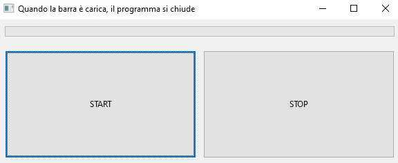

Timer(s)
Documentazione ufficiale wx.Timer
Classe per gestire i timer (con cui implementare semplici temporizzazioni)
I Timer sono oggetti molto comuni in ogni libreria OOP. Per la scansione del tempo si appoggiano tipicamente al clock di sistema, che teoricamente scandisce il milionesimo di secondo, ma che per motivi tecnici che non sto a spiegarvi (a lezione me lo chiederete, lo so: il bello dell'inutile) è affidabile appena al millesimo di secondo. Per quello che serve a noi, basta e avanza...
Un Timer è un oggetto della classe wx.Timer che gestisce appunto una
scansione del tempo in millisecondi. Poiché ha già il suo bel daffare
con questa questione del tempo vive sospeso rispetto al Main Event
Loop e quindi non gestisce direttamente i suoi eventi, ma si appoggia
alla sua widget parent. Detto così sembra complicato... vediamo un
esempio commentato e capirete subito come funziona.
# dichiariamo un oggetto della classe wx.Timer
# con la nostra widget come parent
# Manteniamo un riferimento ad esso con una variabile membro (una del tipo self.var)
# Se nella vostra app avete 2 timer, inserite un ID
self.timer = wx.Timer(self)
# facciamo il BIND tramite la parent widget: BIND(evento, funzione, oggetto)
self.Bind(wx.EVT_TIMER, self.funzioneDaEseguire, self.timer)
Ecco qua! Come avete visto non è particolarmente complicato. Adesso il timer è pronto e collegato alla funzione da eseguire al timeout. Ma come si fa a far partire il timer? E a fermarlo? E...
Come vediamo fra un attimo, per attivare un timer, basta invocare la funzione Start(millisecondi). Se ad esempio invochiamo Start(100), ogni 100 millisecondi il timer genererà un evento wx.EVT_TIMER che nel nostro esempio, scatenerà la funzioneDaEseguire.
Se avete necessità di fermare questa ripetizione infinita, usate la funzione Stop(). Ultima, ma non meno importante, se avete bisogno di eseguire una sola volta la funzione dilazionata nel tempo, ad esempio fra 10 secondi, avviate il timer con la funzione StartOnce(10000).
# AVVIA il TIMER
# Il parametro è in millisecondi.
# Significa che questo timer genererà un evento EVT_TIMER ogni secondo finchè non verrà fermato
timer.Start(1000)
# FERMA IL TIMER
timer.Stop()
# AVVIA IL TIMER per un'unica esecuzione
# come Start() ma termina il timer al primo timeout
timer.StartOnce(millisecondi)
Spero sia tutto chiaro :)
wx.Gauge
Documentazione ufficiale wx.Gauge
Classe grafica per implementare una barra di avanzamento (orizzontale o verticale)
La classe wx.Gauge rappresenta una widget che implementa una barra di avanzamento.

La barra di avanzamento va impostata indicando il range predefinito. In questo esempio ho messo range=10 e questo significa che la barra si caricherà come fosse divisa in 10 pezzi. Nell'esempio presentato abbiamo un timer per far avanzare la barra di uno step automaticamente ogni secondo e 2 pulsanti per fare OK e STOP.
Nell'esempio proposto quando si clicca OK la barra comincia a caricarsi e può essere fermata cliccando STOP. Quando la barra è carica il programma si chiude.
import wx
class Esempio(wx.Frame):
def __init__(self):
super().__init__(None, title="Quando la barra è carica, il programma si chiude")
self.timer = wx.Timer(self,1)
self.Bind(wx.EVT_TIMER, self.OnTimer, self.timer)
self.conta = 0
panel = wx.Panel(self)
vbox = wx.BoxSizer(wx.VERTICAL)
self.barra = wx.Gauge(panel, range=10)
vbox.Add(self.barra, proportion=0, flag=wx.ALL|wx.EXPAND, border=10)
hbox = wx.BoxSizer(wx.HORIZONTAL)
pulsanteStart = wx.Button(panel, label="START")
pulsanteStart.Bind(wx.EVT_BUTTON, self.OnOk)
hbox.Add(pulsanteStart, proportion=1, flag=wx.ALL|wx.EXPAND, border=5)
pulsanteStop = wx.Button(panel, label="STOP")
pulsanteStop.Bind(wx.EVT_BUTTON, self.OnStop)
hbox.Add(pulsanteStop, proportion=1, flag=wx.ALL|wx.EXPAND, border=5)
vbox.Add(hbox, proportion=1, flag=wx.ALL|wx.EXPAND, border=5)
panel.SetSizer(vbox)
self.SetMinSize( (600,200) )
def OnTimer(self, event):
self.conta += 1
if self.conta > 10:
self.Close(True)
return
self.barra.SetValue(self.conta)
return
def OnOk(self, event):
self.timer.Start(1000)
return
def OnStop(self, event):
self.timer.Stop()
return
# ----------------------------------------
if __name__ == "__main__":
app = wx.App()
window = Esempio()
window.Show()
app.MainLoop()
Esercizi
Esercizio 2601 (orologio)
Implementare una semplice finestra con un'unica etichetta che visualizza un orologio funzionante (che scorre) con ore, minuti, secondi.
Esercizio 2602 (cronometro)
Implementare un cronometro con una etichetta con valore iniziale "00:00:00" rappresentanti rispettivamente minuti, secondi e centesimi di secondo e tre pulsanti per le funzioni START, STOP, RESET.
- START fa (ri)partire il cronometro
- STOP lo ferma.
- RESET lo (ri)imposta a ZERO
Esercizio 2603 (semaforo)
Applicazione con 4 immagini per 3 caselle: luce rossa, luce gialla, luce verde, luce grigia (luce spenta). Il semaforo inizia con la luce verde attiva e le altre due grigie. Ogni 5 secondi si passa allo stadio successivo (luce gialla, poi luce rossa, poi si ritorna a luce verde, all'infinito).